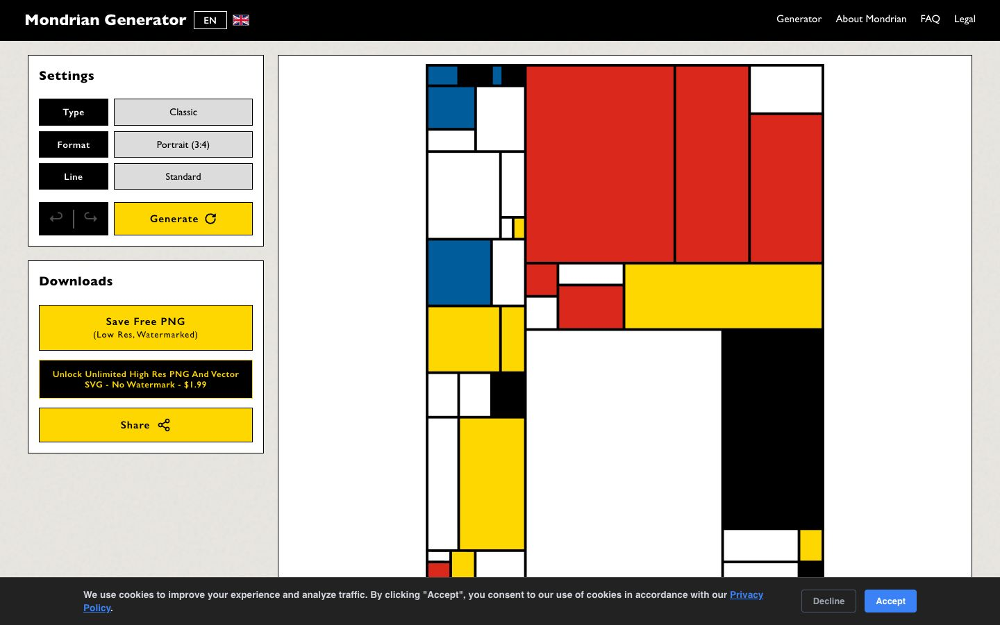

References / Website / 261
Mondrian Generator (mondriangenerator.com)
A browser tool that draws random Mondrian-like compositions, with controls in black-outlined boxes and flat yellow and black buttons.
- Source
- mondriangenerator.com
- Style
- De Stijl (agent-proposed, not yet reviewed by a person)
- Moods
- Playful, orthogonal, utilitarian
- Evidence
- Captured with
tools/capture.mjs(headless Chrome, 1440 × 900) on 28 September 2026 and inspected. The screenshot shows the first viewport; the measurement covers up to four screens. The first capture with a 3-second wait showed an empty canvas; the kept capture waited 9 seconds. A cookie bar covers the bottom 35 px. - Reviewed
- Rights
- Third-party work, stored with credit for commentary. License: unverified. Rights policy
Observed
- A black top bar holds the title “Mondrian Generator” in white bold sans-serif and small navigation links.
- At left, two white panels with thin black outlines hold settings: black label cells, light gray option cells, and flat yellow buttons with black text.
- At right, a generated composition in a portrait format shows many black-outlined rectangles, several filled red, yellow, blue, or black, the rest white.
- The page background is a light gray with a faint texture; no control has rounded corners.
- A dark cookie bar with a blue Accept button runs along the bottom edge.
Why it belongs
The generated compositions follow the grammar loosely: they subdivide into many small cells, which is closer to Mondrian’s 1918–1919 grids than to the few large planes of 1920–1921.
The composition is drawn as an image (image share 0.71), so computed styles see only the controls: 1 px outlines, 2 hues, and a 0.08 round share from a few small elements.
Borrow
Put tool controls in square cells with 1 px black outlines and one yellow action color; keep the working area white.
Measured
Machine-extracted by tools/extract-traits.js on . Full measurement.
- Type families
- Gill Sans (64%), sans-serif (31%), Inter (4%)
- Type scale ratio
- 1.2
- Median radius
- 0 px
- Mean chroma
- 0.13
- Palette
- #000000 25%
- #ffffff 23%
- #222222 20%
- #dcdcdc 14%
- #ffd700 12%
- #a0a0a0 5%
- #3b82f6 2%

